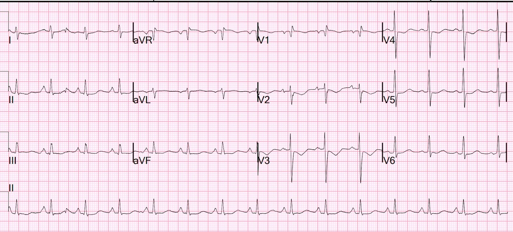
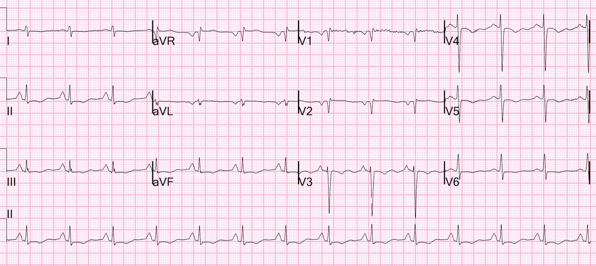
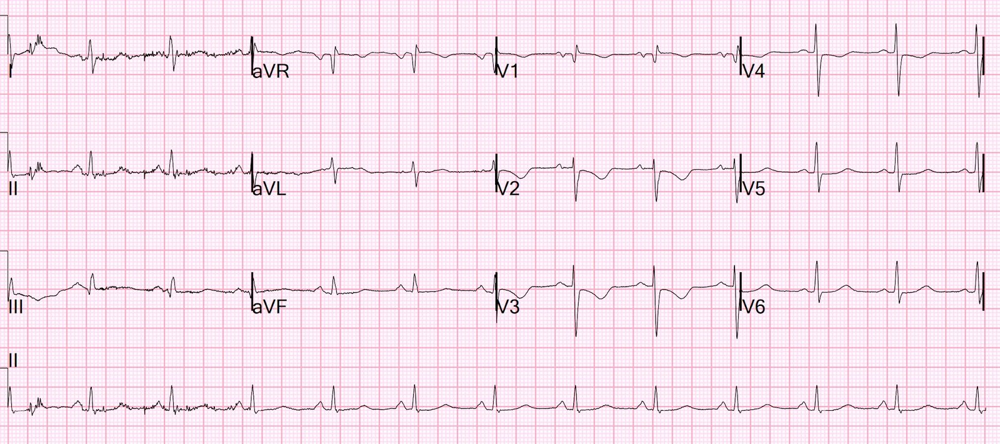
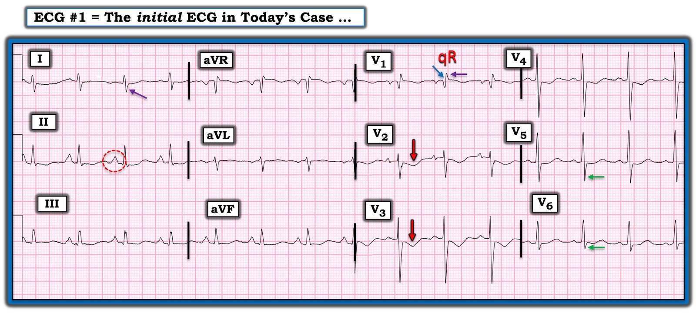
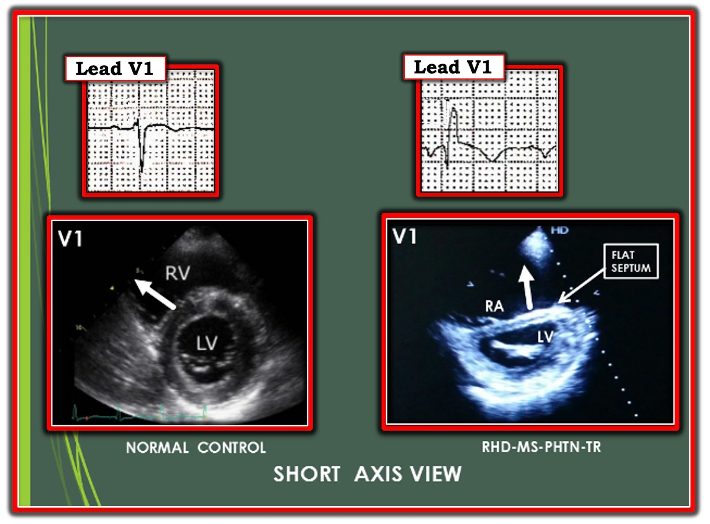
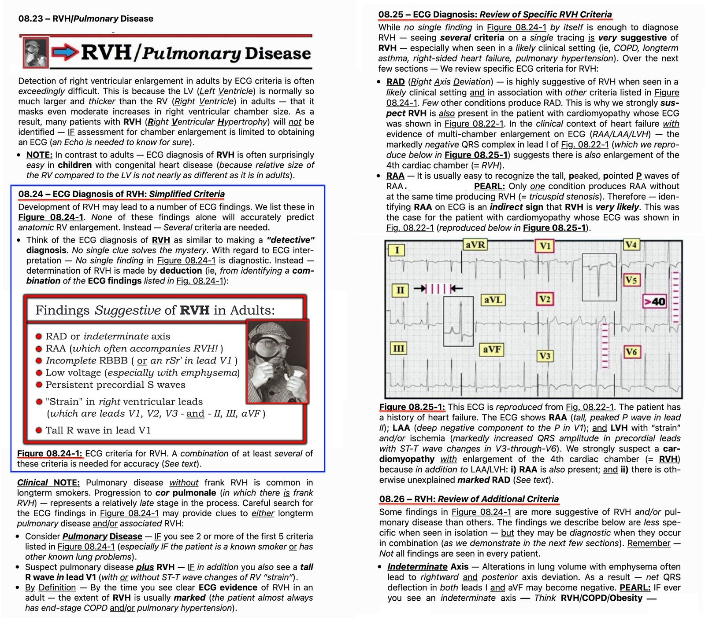

12/02/2023 — Điều gì đang xảy ra ở V2 và V3, với troponin I tăng lên 1826 ng/L lúc 4 giờ?
Bản dịch tiếng Việt của bài "What is going on in V2 and V3, with a troponin I rising to 1826 ng/L at 4 hours?" – Dr. Smith’s ECG Blog. Giữ nguyên toàn bộ 9 hình ảnh và 4 video của bản gốc.
Tôi đang đọc các điện tâm đồ trên hệ thống trước một ca trực và thấy bản này:


Bạn nghĩ gì?
Tôi lo rằng ST chênh xuống và sóng T đảo ngược ở V2 và V3 có thể là OMI thành sau. Tôi vào hồ sơ bệnh án và thấy đây là một bệnh nhân nhiễm khuẩn huyết, tụt huyết áp, K 3.0. Không có đau ngực. Vì vậy tôi nghĩ có lẽ đây không phải OMI thành sau, nên tôi bỏ qua và tiếp tục đọc điện tâm đồ.
Sau đó, khi tôi đang làm việc tại khoa cấp cứu (ED), có một bệnh nhân được chuyển từ phòng thường sang khu hồi sức vì tụt huyết áp tái diễn. Lúc này bệnh nhân thuộc quyền chăm sóc của tôi. Khi xem lại ca bệnh, tôi thấy điện tâm đồ và nhận ra đó chính là bản ghi lúc trước. Đến lúc này đã có 2 kết quả troponin: lần đầu 40 ng/L, lần thứ 2 sau đó 2 giờ là 803 ng/L, rồi lần thứ ba là 1826 ng/L lúc 4 giờ.
Giờ thì tôi lo rằng quả thật có OMI thành sau. Nhưng bà vẫn hoàn toàn không có cảm giác khó chịu ở ngực, và lại có đủ mọi lý do để bị nhồi máu cơ tim típ 2 (do tụt huyết áp). Khi xem kỹ thêm hồ sơ, tôi thấy bà từng có một đợt được nhận định là nhồi máu cơ tim típ 2 cách đó 6 tuần. Khi ấy không chụp mạch vành.
Đây là điện tâm đồ của lần khám đó:


Không có gì có giá trị chẩn đoán, chỉ có nhiều bất thường ST-T không đặc hiệu.
Tuy nhiên, có một sóng P rất nhọn ở chuyển đạo II (một “P phế nhọn”).
Điều này gợi ý có tăng áp phổi và do đó có thể có RVH.
Tuy nhiên, không có trục lệch phải đáng kể và không có sóng R lớn ở V1, điều này phản đối khá mạnh RVH.
Như Ken trình bày bên dưới, còn có sóng S rõ ở V5 và V6; đây là một dấu hiệu khác của RVH.
Chúng tôi ghi thêm một điện tâm đồ 3 giờ sau bản đầu tiên:


Các dấu hiệu ở V2 và V3 vẫn tồn tại.
Tôi xem lại hồ sơ của bà và thấy một kết quả siêu âm tim chính thức từ lần khám trước ghi “Thất phải giãn lớn nặng và giảm chức năng tâm thu thất phải”.
Vì vậy chúng tôi làm siêu âm tim tại giường. Đây là 4 mặt cắt (xin lỗi, tôi dùng iPhone quay video màn hình máy tính):
Tất cả đều cho thấy thất phải rất lớn và thất trái có vẻ chức năng tốt. Tôi không thấy rối loạn vận động thành sau.
Thêm vài suy nghĩ về điện tâm đồ: Các sóng ST-T này rất điển hình cho phì đại thất phải, nhưng những bất thường ST-T như vậy của RVH thường gặp trong bối cảnh trục lệch phải và sóng R lớn ở V1, nên tôi chưa bị thuyết phục. Mặt khác, từ siêu âm tim trước đó 6 tuần, tôi đã có bằng chứng siêu âm tim chính thức về thất phải giãn lớn.
Đến lúc này, tôi khá chắc rằng không có OMI thành sau mà đây là phì đại thất phải. Nhưng tôi chưa chắc chắn.
Tôi gọi khoa tim mạch để làm siêu âm tim chính thức.
Họ đồng ý làm siêu âm tim chính thức. Đây là kết quả:
–Buồng thất trái nhỏ, đổ đầy kém.
–Chức năng tâm thu thất trái bình thường với EF ước tính 60%.
–Không có rối loạn vận động thành khu trú.
–Vách liên thất bị dẹt trong cả tâm thu và tâm trương, phù hợp với quá tải áp lực và thể tích.
–Thất phải (RV) giãn lớn nặng và giảm chức năng tâm thu thất phải.
–Nhĩ phải giãn lớn, mức độ nặng.
–Hở van ba lá nặng.
–Áp lực tâm thu động mạch phổi ước tính là 31 mmHg + áp lực nhĩ phải.
–Dựa trên hình ảnh tĩnh mạch chủ dưới (IVC), áp lực nhĩ phải ước tính tăng.
Troponin đạt đỉnh 2914 ng/L
======================================
BÌNH LUẬN CỦA TÔI, bởi KEN GRAUER, MD (12/2/2023 — Cập nhật cho WordPress ngày 22/12/2025):
Một trong những chẩn đoán điện tâm đồ khó đưa ra nhất là RVH (phì đại thất phải – Right Ventricular Hypertrophy). Khi nói vậy — tôi không muốn nói đến những ca RVH rõ ràng trên điện tâm đồ — trong đó QRS có thời gian bình thường (tức là không có RBBB và không có WPW) — và có RAD (trục lệch phải – Right Axis Deviation) rõ rệt + một sóng R chiếm ưu thế ở chuyển đạo V1.
- Điểm MẤU CHỐT: Các dấu hiệu điện tâm đồ cực đoan là RAD rõ rệt và sóng R chiếm ưu thế ở chuyển đạo V1 thường không gặp ở người lớn bị RVH cho đến giai đoạn muộn của bệnh, và đôi khi ngay cả khi đó cũng không. Thay vào đó — tôi muốn nói đến những dạng RVH ít rõ ràng hơn nhưng vẫn có ý nghĩa lâm sàng, vốn quá dễ bị bỏ sót!
= = =
Hãy xem xét những điều sau:
- RVH dễ chẩn đoán hơn nhiều ở trẻ nhũ nhi và trẻ nhỏ so với người lớn. Đó là vì kích thước (và khối lượng) tương đối của RV (thất phải – Right Ventricle) so với LV (thất trái – Left Ventricle) — ở trẻ nhũ nhi và trẻ nhỏ lớn hơn nhiều so với ở người lớn. Ngược lại, khi đến tuổi trưởng thành — LV bình thường có thể dày tới 3X (với khối lượng tới 10X) so với RV bình thường. Do đó — ở người lớn thường cần RV tăng kích thước rõ rệt — trước khi thấy được sóng R chiếm ưu thế ở chuyển đạo V1.
- Ngược lại — tỷ lệ R>S (tức là chiều cao sóng R lớn hơn độ sâu sóng S) ở chuyển đạo V1 vẫn là một dấu hiệu thường gặp và bình thường ở trẻ em cho đến ~5 tuổi!
- Tương tự (tức là do ưu thế bình thường của LV) — RAD rõ rệt trên mặt phẳng trán là một dấu hiệu tương đối muộn của RVH ở người lớn.
ĐIỂM THEN CHỐT (PEARL) #1: Hãy coi chẩn đoán RVH trên điện tâm đồ là một chẩn đoán “thám tử”. Không có manh mối đơn lẻ nào giải được bí ẩn. Thay vào đó — việc xác định RVH được thực hiện bằng suy luận (tức là bằng cách nhận ra một tổ hợp các dấu hiệu điện tâm đồ ở một bệnh nhân có bệnh sử lâm sàng phù hợp với RVH).
- Tôi đã nhiều lần trình bày Quan điểm của tôi về chẩn đoán điện tâm đồ của RVH trên Dr. Smith’s ECG Blog (Xem Bình luận của tôi ở cuối trang trong bài ngày 6 tháng Ba năm 2022 và bài ngày 1 tháng Chín năm 2020, chỉ kể ra 2 bài).
- Để ôn lại — bản tóm tắt dễ dùng của tôi về RVH trên điện tâm đồ có trong PHẦN BỔ SUNG bên dưới (ở Hình 3 đến 6).
= = =
Điều này áp dụng thế nào cho ca hôm nay?
Để rõ ràng, trong Hình 1 — tôi đã đánh dấu điện tâm đồ ban đầu trong ca hôm nay.
- ĐIỂM THEN CHỐT (PEARL) #2: Như thường lệ — Bệnh sử là MẤU CHỐT! OMI thành sau cấp sẽ là mối lo hàng đầu với điện tâm đồ ở Hình 1 — NẾU bệnh nhân đến viện vì đau ngực mang tính chất do tim. Nhưng bệnh nhân hôm nay không đau ngực.
- Mặt khác — sóng T đảo ngược đối xứng ở chuyển đạo V2 và V3 trên điện tâm đồ ban đầu hôm nay có thể hoàn toàn phù hợp với “tăng gánh” thất phải ở một bệnh nhân RVH — NẾU: i) Có các dấu hiệu điện tâm đồ khác phù hợp với RVH; và ii) Bệnh sử của bệnh nhân phù hợp với bệnh phổi hoặc bệnh lý khác có khả năng đi kèm RVH.
= = =
Các dấu hiệu điện tâm đồ khác phù hợp với RVH ở Hình 1:
- Trục: Dù không có RAD thực sự — bình thường phức bộ QRS ở chuyển đạo I là dương. Biên độ sóng R thấp ở chuyển đạo I của Hình 1 — kèm một sóng S có kích thước bằng sóng R ở chuyển đạo này là một dấu hiệu không thường gặp.
- Điện thế tương đối thấp: Dù không đạt tiêu chuẩn chặt chẽ của điện thế thấp (tức là cả 6 chuyển đạo chi ≤5 mm) — biên độ QRS nhìn chung có vẻ giảm ở các chuyển đạo chi của Hình 1.
- RAA (bất thường nhĩ phải – Right Atrial Abnormality): Sóng P cao, nhọn và đỉnh sắc ở mỗi chuyển đạo dưới (cao ≥2.5 mm ở chuyển đạo II) — thỏa tiêu chuẩn điện tâm đồ của RAA. Trong y khoa chỉ có 1 bệnh lý gây lớn nhĩ phải mà không đồng thời gây RVH. Bệnh lý đó là hẹp van ba lá, vốn hiếm gặp. Vì vậy, dấu hiệu điện tâm đồ RAA mà không phải do thể trạng gầy mảnh — thường cung cấp một manh mối gián tiếp quan trọng về sự hiện diện của RVH.
- Sóng S tồn tại dai dẳng: Bình thường biên độ sóng R tăng dần khi đi qua các chuyển đạo trước tim (khi hoạt động điện di chuyển sang trái, nơi có LV lớn hơn). Biên độ sóng R thường đạt đỉnh ở V4 hoặc V5 — rồi giảm xuống (ở V5,V6). Bình thường hoàn toàn không có sóng S ở V5,V6 — vì đến thời điểm này của quá trình khử cực, mọi hoạt động điện đều đang đi sang trái. Nếu ở V5,V6 vẫn còn sóng S lớn hơn mức rất nhỏ — điều này có thể là kết quả của hoạt động điện hướng sang phải đáng kể vẫn đang tiếp diễn.
- = = =
- Hình ảnh qR ở chuyển đạo V1: Dù chiều cao sóng R ở chuyển đạo V1 của Hình 1 không quá cao — sóng R tận này (ít nhất bằng độ sâu sóng S ở chuyển đạo V1) bình thường không gặp. Ở bệnh nhân RVH — dấu hiệu hình ảnh qR có tương quan chặt chẽ với tăng áp phổi.
= = =
XIN NHẤN MẠNH: Xét riêng lẻ — Không dấu hiệu điện tâm đồ nào nêu trên có giá trị chẩn đoán RVH. Tuy nhiên, khi xét cùng nhau — sự kết hợp của các dấu hiệu điện tâm đồ này ít nhất cũng gợi ý RVH, trong khi chờ xem lại hồ sơ bệnh nhân để có thêm thông tin.
- Theo Dr. Smith — việc xem lại hồ sơ và siêu âm tim chính thức làm lại đã xác nhận RVH rõ rệt kèm tăng áp phổi.
= = =
Hình 1: Tôi đã đánh dấu các dấu hiệu tinh tế có thể phù hợp với RVH — trên điện tâm đồ ban đầu của ca hôm nay.


= = =
Vượt ra ngoài phần cốt lõi: Xem kỹ hơn hình ảnh qR ở chuyển đạo V1
- Về mặt kỹ thuật — người ta có thể muốn gọi hình ảnh qR ở chuyển đạo V1 của Hình 1 là phù hợp với IRBBB (blốc nhánh phải không hoàn toàn) — vì sóng S tận có xuất hiện ở các chuyển đạo bên I và V6 của cả hai bản ghi. Lựa chọn của tôi (xét toàn bộ các dấu hiệu điện tâm đồ) — là quy hình ảnh qR này cho RVH kèm tăng áp phổi, thay vì giả định một rối loạn dẫn truyền. Dù vậy — đúng là RBBB hoàn toàn và/hoặc không hoàn toàn thường đi kèm RVH.
- = = =
- ĐIỂM THEN CHỐT (PEARL) #3: Có một lý do sinh lý giải thích vì sao tăng áp phổi do RVH tiến triển có thể tạo ra hình ảnh qR ở chuyển đạo V1 (Hình 2).
= = =
Hình 2 (từ ECG Blog #248 của tôi — phỏng theo, có sự cho phép của Dr. R Balasubramanian):


- BÊN TRÁI: Hình dạng tròn của thất trái bình thường trên mặt cắt trục ngắn này — tương ứng với hình thái rS ở chuyển đạo V1 (mũi tên TRẮNG minh họa khử cực vách ban đầu hướng về phía chuyển đạo V1).
- BÊN PHẢI: Áp lực thất phải tăng (kèm giãn thất phải) được truyền tới vách liên thất, và tạo ra biến dạng “hình chữ D” của LV (như thấy ở đây, trên mặt cắt trục ngắn này). Vách liên thất bị dẹt theo cách này làm thay đổi hướng hoạt hóa vách ban đầu, giờ hướng ra xa chuyển đạo V1 (mũi tên TRẮNG), từ đó tạo ra hình ảnh qR ở chuyển đạo V1 gặp trong RVH + tăng áp phổi.
- LƯU Ý lâm sàng: Do hậu quả của RVH nặng kèm tăng áp phổi — có thể có giãn thất phải tiến triển. Điều này thường dẫn đến TR (hở van ba lá – Tricuspid Regurgitation) đáng kể. Chuỗi sự kiện này giải thích thêm hình ảnh qR thấy ở chuyển đạo V1 — vì TR nặng dẫn tới xoay thất phải rõ rệt theo chiều kim đồng hồ (điều này giải thích sự thay đổi định hướng giải phẫu của vách liên thất). Điều này đúng với câu châm ngôn lâm sàng ở những bệnh nhân này: “qR = TR” (tức là hình ảnh qR ở chuyển đạo V1 rất thường đi kèm hở van ba lá nặng).
= = =
PHẦN BỔ SUNG:
- “Quan điểm của tôi” về chẩn đoán điện tâm đồ RVH được trình bày trong 4 Hình sau (từ Grauer K: ECG-2014 e-Pub).
= = =
Hình 3: Tiêu chuẩn điện tâm đồ của RVH.


= = =
Hình 4: Tiêu chuẩn điện tâm đồ của RVH (Tiếp theo).

= = =
Hình 5: Chẩn đoán điện tâm đồ bệnh phổi và RVH ở trẻ em.

= = =
Hình 6: Các bản ghi ví dụ về RVH.

= = =
= = =